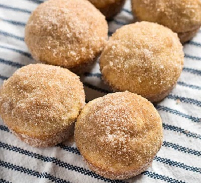

Gluten Free Cinnamon Sugar Muffins

I was diagnosed with celiac disease in 2019 and since then I've been on a quest to adapt some of my old favorites into gluten free recipes. They don't always work out as planned but these muffins are always a crowd pleaser! I use King Arthur 1-to-1 gluten free flour to make these but any gluten free cup-for-cup flour should work well. If you don't use cup-for-cup flour, you'll need to add your own zantham gum. I adapted this recipe from The Salty Marshmallow.
Ingredients:
- For the Muffins:
- 1 1/2 Cups Gluten Free 1-to-1 Flour
- 1/2 Cups Sugar
- 1 1/2 Teaspoons Gluten Free Baking Powder
- 1/8 Teaspoon Salt
- 1/2 Teaspoon Ground Cinnamon
- 1/4 Teaspoon Ground Nutmeg
- 1 Teaspoon Vanilla Extract
- 1 Large Egg
- 1/2 Cup Milk
- 1/3 Cup Butter (Melted)
- For the Topping:
- 1/3 Cup Sugar
- 2 Teaspoons Ground Cinnamon
- 5 Tablespoons Butter (Melted)
Instructions:
- Preheat the oven to 350℉. Line muffin tray with paper liners.
- Combine flour, sugar, baking powder, salt, cinnamon, and nutmeg in large bowl.
- In another bowl, beat together egg, milk, vanilla extract, and melted butter.
- Add the wet ingredients into the dry ingredients. Stir until incorporated.
- Spoon batter into muffin cups. Bake for 20-25 minutes.
- Allow muffins to cool for 5 minutes before removing them from the tray.
- For the topping, combine the cinnamon and sugar in a bowl. Melt the butter in another bowl.
- Dip the muffin tops into the melted butter, then roll in the cinnamon sugar mix.
- Enjoy!